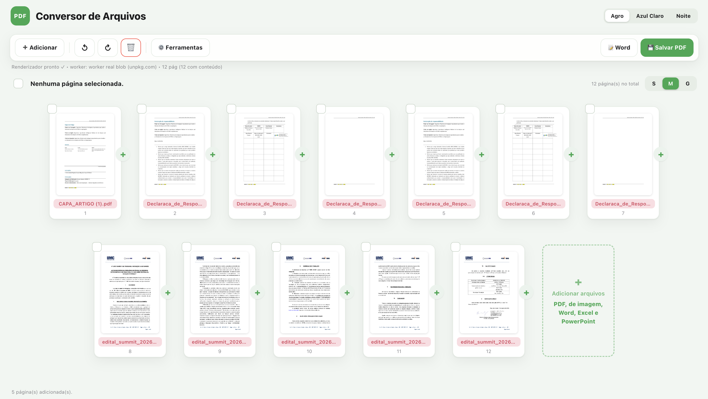

Estudante de Engenharia de Software. Gosto de transformar dados em decisão e problemas em código, e levo isso para onde faz diferença, inclusive o agronegócio.
Minha curiosidade por tecnologia começou cedo. Durante a formação em Engenharia de Software, passei a me interessar cada vez mais por dados e desenvolvimento.
Aprendo como a análise de dados ajuda a identificar padrões, melhorar processos e apoiar decisões. Hoje evoluo no desenvolvimento de soluções com Python, Java, Power BI e bancos de dados, sempre aberto a novos aprendizados e desafios. Meu diferencial é o interesse pelo agronegócio: é onde mais gosto de aplicar tecnologia e dados.
MISSION
Construir soluções usando tecnologia e dados para resolver problemas reais.
// 02 · JORNADA
Minha jornada até aqui
2024
Primeiras experiências
Summit UMC 2024, com desenvolvimento e apresentação de software.
2025
Dados + tecnologia
Vision Tech em Ribeirão Preto e Summit UMC 2025, aproximando dados, IA e agronegócio.
2026
AgroTech + desenvolvimento
Agrishow 2026, programa START da TOTVS e projetos que unem dados, software e campo.
Momentos que marcaram minha jornada
1º ano · Software
Apresentação sobre Software de Gestão de Estoque
No primeiro ano da faculdade, apresentei nosso software de automação e gerenciamento de estoque com RFID (Radio Frequency Identification) e IoT (Internet das Coisas), otimizando processos logísticos e mantendo a organização dos clientes com tecnologia. Foi uma grande oportunidade de atuar como Product Owner do projeto e reforçou meu interesse pela área.
2025 · Evento
Viagem Técnica para Ribeirão Preto / Vision Tech
Em 2025, viajei sozinho da Zona Leste de São Paulo até Ribeirão Preto para o Vision Tech, evento de inovação, tecnologia e dados aplicados ao agronegócio. Acompanhei palestras sobre análise de dados, inteligência artificial e IoT para otimizar a produção no campo e apoiar decisões no setor agro.
Reconhecimento
Reconhecimento da Prefeitura de Suzano
Recebi uma carta de reconhecimento pela dedicação e pelo comprometimento ao longo da minha trajetória profissional, atendendo com seriedade e empenho mais de 1000 cidadãos suzanenses e empresas municipais na regularização de dívidas.
2026 · AgroTech
Experiência na Agrishow 2026
A Agrishow 2026 foi um marco profissional e pessoal. Vivenciei de perto as inovações do agronegócio, acompanhando empresas como John Deere, Case IH, Massey Ferguson e Jacto, e observei como dados, automação e tecnologia transformam o campo, de máquinas conectadas a soluções inteligentes de gestão agrícola. Isso fortaleceu meu interesse em unir tecnologia e agro, com foco em análise de dados.
// 03 · PROJETOS
Projetos que parecem produtos

AUTOMATIONSOFTWARE
Conversor de Arquivos
Conversor multifuncional inspirado no SmallPDF: transforma PDFs em Word e Excel e manipula arquivos ZIP, com interface moderna, temas personalizados e foco em produtividade.
Integrado com Cilia e Audatex, calcula valores automaticamente, analisa percentuais e organiza serviços, com foco em agilidade e clareza para o usuário.
Dashboard inspirado na John Deere para analisar o desempenho de máquinas agrícolas, com ranking Top 5, indicadores de faturamento e visual moderno voltado ao agronegócio.
Desenvolvido em Java com CRUD completo (cadastro, consulta, atualização e exclusão), integração com banco de dados e foco em organização e controle de produtos.
Sistema web para uma pequena concessionária de tratores, com arquitetura MVC e padrão DAO. Controla estoque, status de vendas e organização das máquinas.